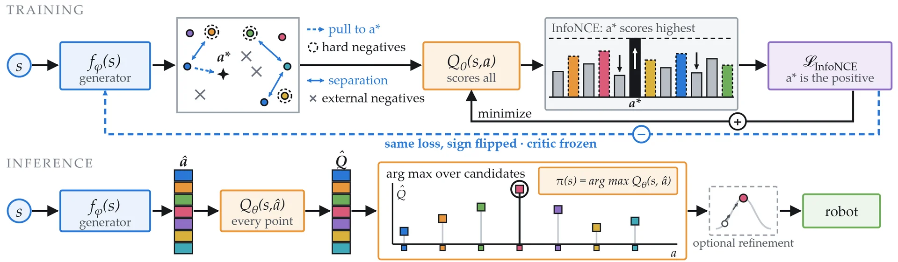
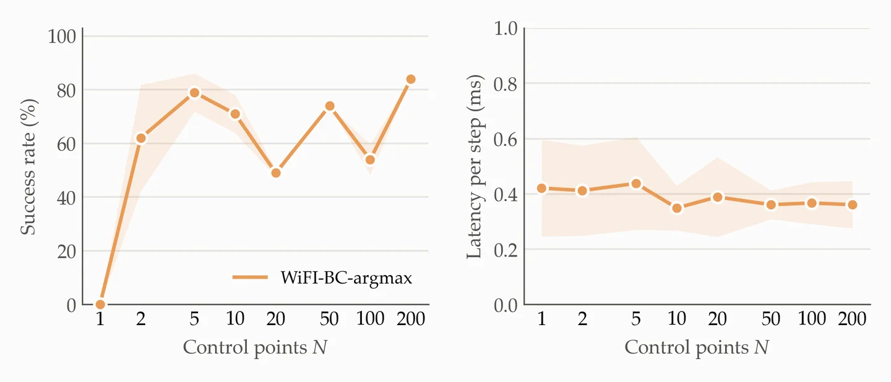
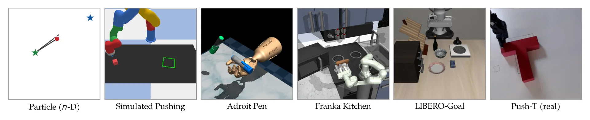
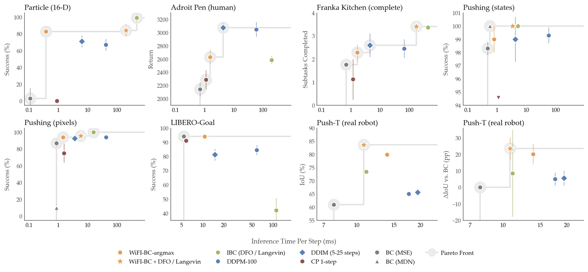
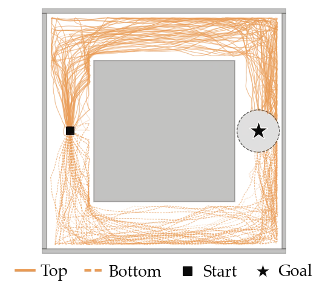
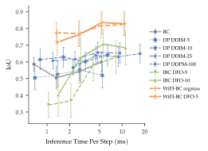

Instead of searching the action space as in implicit behavioral cloning, WiFI-BC learns a generator that proposes a small set of candidate actions, and a state-action score function. The generator is trained to make the small set of candidate actions representative of the score function, while making one of them the maximizer. Therefore, acting is simply an arg max over the candidate actions rather than an optimization over the entire action space.
Abstract
Imitation learning algorithms face the dilemma of choosing between task success and inference-time efficiency. Explicit methods provide the fastest inference but often fail to model complex, discontinuous, or multimodal action distributions. On the other hand, implicit and diffusion-based methods improve their success by iteratively refining their actions, which sacrifices efficiency. Whereas some methods aim to distill diffusion policies while increasing inference speed, they either suffer from significant performance decreases or their speed increase is limited. In this paper, we introduce Wire-Fitting Implicit Behavioral Cloning (WiFI-BC), a novel implicit imitation learning method that learns a generator to output a small set of N candidate actions and a state-action score function to evaluate them. Inspired by the structural maximization property of wire-fitting interpolation, our algorithm biases one of the candidate actions toward maximizing the score function. Consequently, the inference optimization step consists of just one forward generation and N parallelizable evaluations rather than an iterative process, providing high success rates while maintaining high inference speed. We evaluate WiFI-BC on seven tasks in synthetic, simulated, and real-world environments, demonstrating equivalent task success to state-of-the-art methods with a significant reduction in per-step inference time.
Method


Implicit Q-Estimator
A state-action score function Qθ(s, a), and the policy acts by maximizing it. It is trained with the InfoNCE loss, a cross-entropy over a candidate set made of the expert action and a set of negative examples.
Control Point Generator
A network fφ that emits N candidate actions per state, called control points. One loss moves only the nearest control point toward the expert action, biasing the generator toward structural maximizability. An entropy loss spreads the rest across the action space, so multimodal demonstrations can receive one control point per mode.
Negative examples sampling
The top-k scored control points, with a stop-gradient, together with either Langevin MCMC negatives for multimodal robustness or noisy copies of the expert action, whose noise tightens during training, for enhanced precision. The mixture makes the Q-estimator aware of the complete action space and sharpens it where it matters most.
Coupled objective
Both networks are trained jointly in a single backward pass. The generator maximizes the same InfoNCE loss with the Q-estimator frozen, which drives the control points toward high Q-scores, while the estimator minimizes it on detached control points.
One-shot inference
WiFI-BC-argmax runs one generator pass, N parallel score evaluations, and an arg max over the control points. When additional precision is required, WiFI-BC-DFO and WiFI-BC-langevin refine the control-point cloud with derivative-free optimization or Langevin MCMC, starting from the control points instead of uniformly sampled actions.
How many control points?

Tasks


| Environment | Obs. dim. | Action dim. | Success metric | # Demos / # Transitions |
|---|---|---|---|---|
| Particle (n-D) | 4n | n | Success Rate | 2,000 / 102,000 |
| D4RL Adroit Pen (human) | 45 | 24 | Episode Reward | 25 / 5,000 |
| D4RL Franka Kitchen (complete) | 59 | 9 | Subtasks Completed (0–4) | 19 / 4,209 |
| Pushing (states) | 10 | 2 | Success Rate | 1,400 / 75,226 |
| Pushing (pixels) | 3×240×320 | 2 | Success Rate | 2,000 / 104,840 |
| LIBERO-Goal (pixels) | 2×3×128×128 | 7 | Success Rate | 500 / 63,728 |
| Push-T WidowX (real) | 2×3×240×320 | 2 | Intersection over Union (IoU) | 151 / 91,757 |
Observation width is given per frame and thus increases with frame stacking. LIBERO provides two RGB views of the scene. Kitchen reports the number of subtasks solved rather than a success rate. All methods are trained from scratch using only the demonstration dataset and no pretraining.
Simulation results
Rollouts
Task success and inference cost
We compare WiFI-BC against regression behavioral cloning (BC), Implicit Behavioral Cloning (IBC), Diffusion Policy with DDPM and DDIM sampling, and Consistency Policy (CP), focusing on task success and per-step inference time. WiFI-BC is never beaten on both success and speed at the same time.


- Excluding BC, WiFI-BC and CP 1-step compete to be the fastest method in every environment, while WiFI-BC is significantly superior in task success.
- Even when inference-time refinement is needed, WiFI-BC is 2× faster than IBC when both need Langevin MCMC refinement.
- On Franka Kitchen, WiFI-BC-langevin obtains the highest number of subtasks completed together with IBC. On LIBERO-Goal, WiFI-BC-argmax is on par with BC, both achieving the best success rate across all methods.
Simulated results are the mean ± standard deviation across three training seeds evaluated on 100 episodes each. Inference times were measured on the same NVIDIA GeForce RTX 5070 Laptop GPU, with a receding horizon of a single step.
Show all numbers
| Method | Score | Time (ms) |
|---|---|---|
| Particle 16-D (success %) | ||
| BC (MSE) | 3 ± 12.6 | 0.11 |
| IBC | 99 ± 4.3 | 476.45 |
| DDPM-100 | 67.0 ± 7.2 | 41.95 |
| DDIM-10 | 71.0 ± 7.1 | 6.45 |
| CP 1-step | 0.0 ± 0.0 | 0.90 |
| WiFI-BC-argmax | 82.7 ± 3.1 | 0.38 |
| WiFI-BC-langevin(100) | 84.2 ± 7.2 | 204.24 |
| Adroit Pen, human (mean return) | ||
| BC (MSE) | 2141 ± 109 | 0.70 |
| IBC | 2586 ± 65 | 195.87 |
| DDPM-100 | 3050 ± 111 | 58.39 |
| DDIM-5 | 3077 ± 67 | 4.32 |
| CP 1-step | 2287 ± 143 | 1.13 |
| WiFI-BC-argmax | 2631 ± 110 | 1.55 |
| Franka Kitchen, complete (subtasks, 0–4) | ||
| BC (MSE) | 1.76 ± 0.07 | 0.69 |
| IBC | 3.37 ± 0.01 | 432.95 |
| DDPM-100 | 2.45 ± 0.41 | 67.34 |
| DDIM-5 | 2.60 ± 0.51 | 4.49 |
| CP 1-step | 1.12 ± 0.88 | 1.20 |
| WiFI-BC-langevin(50+30) | 3.41 ± 0.19 | 172.67 |
| WiFI-BC-argmax | 2.28 ± 0.35 | 1.67 |
| Simulated Pushing, states (success %) | ||
| BC (MSE) | 98.3 ± 0.5 | 0.48 |
| BC (MDN) | 100 ± 0 | 0.57 |
| IBC + DFO | 100 ± 0 | 5.12 |
| DDPM-100 | 99.3 ± 0.6 | 57.92 |
| DDIM-5 | 99.0 ± 1.7 | 4.17 |
| CP 1-step | 4.5 ± 3.5 | 1.12 |
| WiFI-BC-argmax | 99.0 ± 1.0 | 0.79 |
| WiFI-BC-DFO (3 it.) | 100 ± 0 | 3.40 |
| Simulated Pushing, pixels (success %) | ||
| BC (MSE) | 87.0 ± 4.1 | 0.87 |
| BC (MDN) | 10.0 ± 4.3 | 0.87 |
| IBC | 100 ± 0 | 16.06 |
| DDPM-100 | 94.0 ± 2.2 | 43.01 |
| DDIM-5 | 92.7 ± 1.7 | 3.69 |
| CP 1-step | 75.0 ± 11.3 | 1.57 |
| WiFI-BC-argmax | 94.0 ± 3.0 | 1.46 |
| WiFI-BC-DFO (5 it.) | 95.7 ± 1.7 | 5.87 |
| LIBERO-Goal, pixels (success %) | ||
| BC | 94.1 ± 1.9 | 5.39 |
| IBC + DFO | 42.0 ± 8.7 | 111.05 |
| DDPM-100 | 84.5 ± 3.4 | 58.77 |
| DDIM-10 | 81.2 ± 4.1 | 14.92 |
| CP 1-step | 91.1 ± 1.4 | 5.81 |
| WiFI-BC-argmax | 93.9 ± 0.7 | 10.61 |
| Push-T, WidowX, real robot (IoU / Δ vs. BC) | ||
| BC | 61.0 / – | 7.8 |
| IBC + DFO (10 it.) | 73.41 / +8.5 ± 26.3 | 11.1 |
| DDPM-100 | 65.0 / +5.0 ± 3.9 | 17.6 |
| DDIM-25 | 65.6 / +5.6 ± 4.4 | 19.4 |
| WiFI-BC-argmax | 79.9 / +20.2 ± 6.2 | 13.9 |
| WiFI-BC-DFO (5 it.) | 83.6 / +23.6 ± 6.6 | 10.8 |
Mean ± standard deviation across training seeds. The best results of each environment are bold if no more than two methods overlap. The best inference time recorded for each environment, apart from BC, is bold.
Multimodality

We evaluate WiFI-BC's robustness to multimodal action distributions in MuJoCo Point Maze by placing an obstacle between the initial state and the goal, and training on demonstrations from a scripted expert that arbitrarily takes either the upper or lower corridor.
Over 100 rollouts, WiFI-BC exploits both modes at the first decision point and successfully follows both routes.
Real-world results
On Push-T, a WidowX arm (6DoF), with its end effector pointing downward, must push a T-shaped block onto a matching silhouette. Because variance is dominated by the difficulty of each initial configuration, we also report the IoU improvement over BC averaged across configurations (Δ vs. BC).
83.6%IoU, WiFI-BC-DFO
+23.6 ppΔ IoU vs. BC, WiFI-BC-DFO
+8.5 ppΔ IoU vs. BC, best baseline (IBC + DFO)
Setup
Rollouts from different initial configurations
Success across receding horizons

Code
The official implementation includes training and evaluation for Particle, Simulated Pushing, Adroit Pen, Franka Kitchen, Point Maze and LIBERO-Goal. The real-robot Push-T experiments need the physical setup, so that code is not included. It requires uv and Python 3.12 or 3.13.
git clone https://github.com/WiFI-BC/Wire-Fitting-Implicit-Behavioral-Cloning.git wifi-bc
cd wifi-bc
uv sync